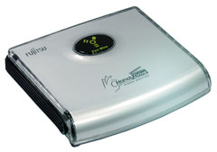
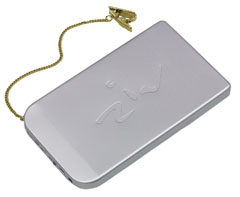
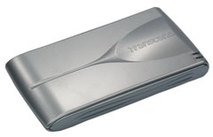
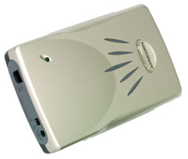
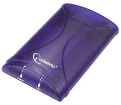
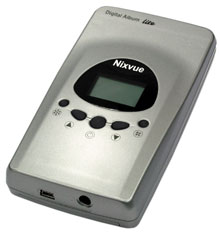

Олег Денисов, Сергей Назаров
Первую часть обзора см. "BYTE/Россия" № 2'2004.
Накопители на жестких дисках
Если вам необходим мобильный накопитель на 2,5-дюйм жестком диске ("тяжеловесные" решения на базе 3,5-дюйм моделей исключаются сразу - их масса составляет около 0,7 кг), то проще всего, конечно, приобрести готовое решение - внешний жесткий диск с интерфейсом USB либо IEEE 1394 (или обоими сразу). Конструктивно такие устройства состоят из двух частей - внешнего отсека и установленного в него жесткого диска. Однако можно приобрести эти компоненты по отдельности и легко собрать из них внешний накопитель.
Пользователи, недавно работающие с ПК, и те, кто сторонится технических "штучек", очевидно, выберут первый метод решения проблемы - пусть "бесхитростный" и, быть может, дорогой, но без лишних хлопот. Энтузиасты компьютерной техники и пользователи со стажем, скорее всего, предпочтут второй - он обеспечивает несравненно большую гибкость решения (можно выбрать отсек и жесткий диск в соответствии со своими запросами и финансовыми возможностями), но требует некоторой технической подготовки.
Поэтому в раздел о накопителях на жестких дисках мы включили как готовые внешние диски - Fujitsu HandyDrive Video Edition 60 Гбайт и Hyundai ZIV2 30 Гбайт, так и внешние отсеки - Apricorn EZ Upgrade Universal Hard Drive Upgrade Kit, Gembird Flexi-Drive Mini-FD2.0, Transcend 2.5" Portable Hard Disk Enclosure (две модификации - на микросхемах GL811USB и GL811E). Кроме того, в тестировании были представлены два специализированных накопителя - Nixvue Digital Album Lite 30 Гбайт и Nixvue Vista 40 Гбайт, призванные в буквальном смысле разгрузить фотографов при работе "в полевых условиях".
Методика тестированияДля измерения быстродействия накопителей и носителей применялись синтетические тесты из пакета HD Tach 2.61. В тесте на скорость последовательного чтения данных регистрируется график зависимости скорости чтения данных от их расположения в логическом адресном пространстве носителя, рассчитывается средняя (Read Speed Average), максимальная (Read Speed Maximum) и минимальная (Read Speed Minimum) скорость чтения. В тесте на скорость последовательной записи регистрируется график зависимости скорости записи данных от их расположения в логическом адресном пространстве и рассчитывается средняя (Write Speed Average), максимальная (Write Speed Maximum) и минимальная (Write Speed Minimum) скорость чтения. Проводились также тесты на скорость случайного доступа к данным (Random Access Time). Все тесты выполнялись под управлением ОС Microsoft Windows XP Professional с Service Pack 1a, с драйвером видеоплаты Nvidia Detonator XP 45.23 и обновлением Microsoft DirectX 9.0a при объеме ОЗУ 512 Мбайт в видеорежиме с 32-бит глубиной цвета, разрешением 1024х768 и частотой кадровой развертки 85 Гц. При проведении испытаний мы использовали следующее стендовое оборудование: процессор Intel Pentium 4 3,0 ГГц с 800-МГц системной шиной, системную плату ASUS P4C800 Deluxe и мини-платформу Shuttle SB65G2 XPC (построены соответственно на наборе микросхем Intel 875P и Intel 865PE/ICH5R), два 256-Мбайт модуля памяти DDR400 SDRAM производства Samsung, графическую плату ASUS V9280S на наборе микросхем Nvidia GeForce4 Ti 4200-8X со 128 Мбайт видеопамяти и жесткий диск Seagate Barracuda ATA V ST3120023A емкостью 120 Гбайт. При испытаниях внешних отсеков для жестких дисков применялся 2,5-дюйм жесткий диск Seagate ST94811A из семейства Momentus. Последний также выполнял роль эталона производительности жестких дисков для ноутбуков. Характеристики протестированных устройств приведены в табл. 1-3; результаты тестирования - в табл. 4. |
Внешние жесткие диски
Из двух протестированных внешних жестких дисков (табл. 1) бесспорным лидером был Fujitsu HandyDrive Video Edition 60 Гбайт, обогнавший соперничавший с ним Hyundai ZIV2 30 Гбайт как по скорости чтения/записи (в 1,3/1,2 раза), так и по стоимости 1 Гбайт емкости (в 1,7 раза), и в итоге заслуженно отмеченный знаком "Выбор редакции BYTE/Россия". Кстати, по ценовым характеристикам Fujitsu HandyDrive Video Edition 60 Гбайт успешно конкурировал с "самосборочными" решениями - когда жесткий диск и внешний отсек для него приобретаются раздельно.
|  | Fujitsu HandyDrive Video Edition 60 Гбайт.
|
Таблица 1. Технические характеристики и цены. Жесткие диски
| Внутренние | Внешние | ||||
| Fujitsu MHT-AT MHT2060AT | Seagate Momentus ST94811A | Toshiba 18GAS MK3018GAS | Fujitsu HandyDrive Video Edition 60 Гбайт | Hyundai ZIV2 30 Гбайт | |
| Розничная цена на 25 ноября 2003 г., долл. | 190 | 150 | 130 | 250 | 220 |
| Интерфейс | Ultra ATA/100 | Ultra ATA/100 | Ultra ATA/100 | IEEE 1394 | USB 2.0 |
| Жесткий диск, установленный по умолчанию | - | - | - | Fujitsu MHT-AT MHT2060AT | Toshiba 18GAS MK3018GAS |
| Емкость жесткого диска, Гбайт | 60,0 | 40,0 | 30,0 | 60,0 | 30,0 |
| Скорость вращения, об./мин | 4200 | 5400 | 4200 | 4200 | н/д |
| Емкость кэш-буфера, Мбайт | 2 | 8 | 2 | н/д | н/д |
| Максимальная скорость чтения/записи, Мбайт/с | 41,1/н/д | 34,5/н/д | 36,3/н/д | н/д | 18,0/н/д |
| Максимальная плотность записи, Гбит/кв. дюйм | 69,3 | 60,3 | 35,1 | н/д | н/д |
| Среднее время поиска при чтении/записи, мс | 12,0 | 12,0/14,0 | 12,0 | н/д | н/д |
| Среднее время поиска соседней дорожки при чтении/записи, мс | 1,5 | 1,5/2,0 | 3,0 | н/д | н/д |
| Наработка на отказ, ч | 300 000 | 300 000 | 300 000 | 300 000 | н/д |
| Рабочая температура, ?C | 5 - 55 | 5 - 55 | 5 - 55 | 5 - 55 | н/д |
| Устойчивость к ударам в рабочем/нерабочем состоянии, G | 225 (2 мс)/900 (1 мс), 120 (11 мс) | 225 (2 мс)/800 (1, 2 мс) | 190/800 | 225 (2 мс)/900 (1 мс), 120 (11 мс) | 10 (статическая нагрузка), 300 (динамическая нагрузка) |
| Устойчивость к вибрации в рабочем/нерабочем состоянии, G | 1,0/5,0 | н/д | 1,0/н/д | 1,0/5,0 | н/д |
| Cтоимость 1 Гбайт емкости, долл. | 3,2 | 3,8 | 4,3 | 4,2 | 7,3 |
| Производитель | Fujitsu, www.fujitsu.com | Seagate, www.seagate.com | Toshiba, www.toshiba.com.ru | Fujitsu, www.fujitsu.com | Hyundai, www.hyundaicorp.com |
К достоинствам HandyDrive Video Edition 60 Гбайт также следует отнести наличие двух портов IEEE 1394 (обеспечивают "сквозное" подключение внешних устройств с интерфейсом IEEE 1394, что очень удобно), приятный внешний вид и, конечно, небольшие размеры (11,5x10x2,5 см) и массу (200 г). Правда, HandyDrive Video Edition 60 Гбайт "упакован" в пластиковый корпус и, конечно, проигрывает здесь "металлизированному" и соответственно лучше защищенному ZIV2.
Из других конструктивных особенностей HandyDrive Video Edition 60 Гбайт отметим применение базового контроллера Oxford 911 и 60-Гбайт жесткого диска Fujitsu MHT2060AT на 4200 об./мин из семейства MHT-AT. Кстати, в рамках семейства HandyDrive Video Edition выпускаются еще две модели - емкостью 30 и 40 Гбайт, также с интерфейсом IEEE 1394. Кроме того, Fujitsu предлагает три внешних жестких диска модельного ряда HandyDrive Data Edition с интерфейсом USB 2.0 аналогичной емкости - 30, 40 и 60 Гбайт.
По скорости работы и ценовым характеристикам 30-Гбайт ZIV2 (оборудован 30-Гбайт жестким диском Toshiba MK3018GAS на 4200 об./мин из семейства 18GAS; предусмотрены также модели 20, 40 и 60 Гбайт), конечно, проигрывал HandyDrive Video Edition 60 Гбайт, однако у него есть другие достоинства. Прежде всего ZIV2 - компактное и легкое устройство (габариты 125х72х11 мм, масса 130 г), которое можно положить в карман пиджака или рубашки. Во-вторых, этот диск оборудован более универсальным внешним интерфейсом USB 2.0 - все-таки по "умолчанию" IBM PC-совместимые системы крайне редко оснащаются портом IEEE 1394. В-третьих, это стильная "штучка" и одновременно надежная - "внутренности" ZIV2 спрятаны в элегантно оформленный и прочный корпус из анодированного алюминия, снабженный цепочкой с зажимом - для подстраховки на случай, если накопитель выпадет из кармана.
|  | Hyundai ZIV2 30 Гбайт.
|
Кстати, ZIV2 питается от USB-шины, обеспечивающей по спецификации максимальный ток потребления до 0,5 А, - этого недостаточно для запуска мотора жесткого диска (последний в момент запуска потребляет до 0,8 А). Поэтому при отсутствии дополнительного запаса по мощности питания USB-шины ZIV2 не будет "стартовать". В этом случае используется USB-кабель с фишкой дополнительного питания от порта PS/2, который приобретается дополнительно. Кстати, характерный признак недостаточной мощности питания накопителя - серия "щелчков" при включении его питания вследствие распарковки/парковки сборки из актюаторов и головок жесткого диска.
Отметим также, что на сегодня в серии ZIV-накопителей уже выпускаются новые модели семейства ZIV PRO емкостью 30, 40, 60 и 80 Гбайт, оборудованные одновременно двумя внешними интерфейсами - USB 2.0 и IEEE 1394.
Внешние отсеки для жестких дисков
Пользователи, неплохо разбирающиеся в компьютерной технике, скорее всего, предпочтут приобрести отдельно обычный 2,5-дюйм жесткий диск и внешний отсек для него - такой подход позволяет найти "золотую середину" между быстродействием и емкостью накопителя, с одной стороны, и его стоимостью - с другой. При этом, как показали испытания, важно выбрать не только "правильный" 2,5-дюйм жесткий диск (кстати, здесь могут быть полезны результаты тестирования жестких дисков, проведенного нами летом 2003 г.), но и соответствующий внешний отсек (табл. 2).
Таблица 2. Технические характеристики и цены. Внешние отсеки для жестких дисков
| Apricorn EZ Upgrade Universal Hard Drive Upgrade Kit | Gembird Flexi-Drive Mini-FD2.0 | Transcend 2.5" Portable Hard Disk Enclosure (GL811USB) | Transcend 2.5 Portable Hard Disk Enclosure (GL811E) | |
| Розничная цена на 25 ноября 2003 г., долл. | 90 | 20 | 30 | 30 |
| Интерфейс | USB 2.0 | USB 2.0 | USB 2.0 | USB 2.0 |
| Наработка на отказ, ч | н/д | н/д | н/д | н/д |
| Рабочая температура, ?C | н/д | н/д | 0-50 | 0-50 |
| Производитель | Apricorn, www.apricorn.com | Gembird Electronics, www.gembird.ru | Transcend, www.transcend.com.tw | Transcend, www.transcend.com.tw |
Сразу же отметим, что к нам на тестирование поступило два варианта модели Transcend 2.5" Portable Hard Disk Enclosure - они построены на разных базовых контроллерах (GL811USB и GL811E) и, кроме того, немного отличаются конструкцией корпуса (у последней модификации лучше продуман механизм "сцепления" верхней и нижней крышки корпуса). Как следствие - сильное расхождение в тестах на производительность. Если скорость передачи данных у первого устройства не превышала 12 Мбайт/с, то второй продемонстрировал отличные результаты и с учетом привлекательной цены (в среднем - 30 долл.) был признан моделью с оптимальным соотношением цена/качество и удостоен знака "Выбор редакции BYTE/Россия".
|  | Transcend 2.5" Portable Hard Disk Enclosure.
|
Дизайн Transcend 2.5" Portable Hard Disk Enclosure довольно обычен - отсек оборудован USB-разъемом и разъемом дополнительного питания PS/2, индикатором питания и индикатором передачи данных по USB-интерфейсу. Отметим хорошую комплектацию устройства - защитный чехол для транспортировки, USB-кабель, кабель питания PS/2, краткое печатное руководство пользователя и компакт-диск с драйверами. Декларируется возможность работы в связке с жестким диском емкостью до 160 Гбайт (кстати, Transcend также предлагает варианты поставки с установленным по умолчанию 30- или 40-Гбайт диском), однако в отсек можно встроить только накопители высотой 9,5 мм, что следует считать недостатком - для работы со старыми 12,7-мм "ноутбучными" дисками он непригоден.
Кроме того, при подключении к стендовой мини-платформе Shuttle SB65G2 XPC обоим экземплярам Transcend 2.5" Portable Hard Disk Enclosure не хватало мощности USB-питания - пришлось задействовать кабель дополнительного питания PS/2. Для сравнения - модель Apricorn EZ Upgrade Universal Hard Drive Upgrade Kit отлично работала на "чистом" USB-питании. Правда, в связке с системной платой ASUS P4C800 Deluxe этой проблемы у обоих устройств Transcend не обнаружилось, но надо всегда иметь в виду, что они могут потребовать дополнительной "подпитки".
Модель Apricorn EZ Upgrade Universal Hard Drive Upgrade Kit (построена на контроллере In-system I SD300A1) продемонстрировала очень хорошие результаты в тестах на скорость работы и заняла 2-е место по производительности, но, несмотря на это, была признана победителем среди внешних отсеков для жестких дисков. Решающим аргументом в данном случае стала отличная, можно сказать, эталонная конструкция и продуманный комплект поставки.
EZ Upgrade Universal Hard Drive Upgrade Kit позволяет применять 2,5-дюйм жесткие диски высотой до 12,7 мм, оборудован интерфейсом USB 2.0, совмещенным индикатором питания/передачи данных, гнездом для источника внешнего питания (к нему можно подключить PS/2-порт ПК или внешний блок питания) и переключателем режима питания (от USB-шины или внешнего источника).
|  | Apricorn EZ Upgrade Universal Hard Drive Upgrade Kit.
|
В комплект поставки этой модели входят USB-кабель, кабель питания PS/2 и внешний блок питания (таким образом, отсек может получать питание от трех источников!), краткое печатное руководство пользователя и программный пакет EZ Gig II. Последний состоит из двух программ: Clone EZ обеспечивает создание и восстановление резервных копий жестких дисков (возможна работа с внешними дисками с интерфейсом USB 2.0, USB 1.1 и PC Card и с внутренними IDE-дисками) и создание, копирование, перемещение, удаление и масштабирование разделов на жестких дисках, а Image EZ предназначена для создания и восстановления сжатых образов разделов жестких дисков (позволяет также редактировать и восстанавливать отдельные файлы или директории из образа раздела).
Кроме того, EZ Upgrade Universal Hard Drive Upgrade Kit без проблем работал на "чистом" USB-питании в связке с мини-платформой Shuttle SB65G2 XPC и системной платой ASUS P4C800 Deluxe. В итоге эту модель, более чем заслуженно отмеченную знаком "Выбор редакции BYTE/Россия", можно смело считать самым качественным и универсальным решением среди протестированных отсеков. Правда, цену этого устройства - около 90 долл. - назвать привлекательной нельзя, но оно стоит потраченных денег.
Наконец, третий протестированный отсек, Gembird Flexi-Drive Mini-FD2.0, был построен на уже упоминавшемся контроллере GL811USB со всеми вытекающими отсюда последствиями - низкая производительность (максимальная скорость передачи данных - 12 Мбайт/с) и необходимость применения дополнительного питания PS/2 (соответствующий кабель включается в комплект поставки) при работе в сочетании с мини-платформой Shuttle SB65G2 XPC (впрочем, с системной платой ASUS P4C800 Deluxe такой проблемы не было). Правда, цена этой модели минимальна - в среднем всего лишь 20 долл., но все-таки не оправдывает ее покупки, поскольку быстродействие Flexi-Drive Mini-FD2.0 оставляет желать лучшего.
|  | Gembird Flexi-Drive Mini-FD2.0.
|
Цифровые фотонакопители
Специализированные накопители от Nixvue, Digital Album Lite 30 Гбайт и Vista 40 Гбайт (сокращение от Visual Storage Album), позиционируются в одной потребительской нише - как аксессуары для цифровой фотографии. Их функциональность изготовитель определяет соответственно как "цифровой альбом" и "визуальный альбом" - что, кстати, отражено в наименовании моделей. Однако такое определение кажется весьма туманным, поэтому мы обозначили их как "цифровые фотонакопители" - т. е. устройства для хранения и переноса цифровых фотографий. Такая классификация, по крайней мере, лучше соответствует их сути. Кстати, общепринятого устоявшегося термина для обозначения подобных устройств пока нет.
Подчеркнем, что мы не стремились вычислить лучшие модели среди выпускающихся на сегодня цифровых фотонакопителей, преследуя иную цель - дать общее представление о возможностях таких устройств. Поэтому тестирование было ограничено только двумя моделями (табл. 3).
Таблица 3. Технические характеристики и цены. Цифровые фотонакопители
| Nixvue Digital Album Lite 30 Гбайт | Nixvue Vista 40 Гбайт | |
| Розничная цена на 25 ноября 2003 г., долл. | 400 | 580 |
| Интерфейс | USB 2.0 | USB 1.1 |
| Емкость жесткого диска, Гбайт | 30,0 | 40,0 |
| Стоимость 1 Гбайт емкости, долл. | 13,3 | 14,5 |
| Производитель | Nixvue Systems, www.nixvue.com | Nixvue Systems, www.nixvue.com |
Из этих двух устройств Digital Album Lite проще. Его можно смело отнести к разряду цифровых фотонакопителей начального уровня с урезанной до предела конструкцией - монохромный 1,5-дюйм ЖК-дисплей, клавиши управления, отсек для загрузки карт CF Type I и Type II, порт USB 2.0 и разъем питания (к нему подключается внешний адаптер питания от бытовой сети, входящий в комплект поставки). Внутри корпуса "спрятан" жесткий диск (емкостью 10, 20, 30, как в протестированном экземпляре, или 40 Гбайт) и аккумуляторная литий-ионная батарея. В накопителе используется ОС Wind River VxWorks Operating System. Дополнительно можно приобрести адаптеры-переходники для флэш-карт SM, SD, MMC, MS и адаптер питания от бортовой сети автомобиля.
|  | Nixvue Digital Album Lite 30 Гбайт.
|
Функциональность Digital Album Lite богатой не назовешь. Фотонакопитель обеспечивает копирование файлов с загруженной флэш-карты на внутренний жесткий диск и наоборот и может использоваться как обычный флэш-накопитель или внешний жесткий диск. На этом его возможности исчерпываются - вспомогательные функции (форматирование жесткого диска, стирание всего содержимого флэш-карты и т. д.), конечно, не в счет.
Роль внешнего жесткого диска Digital Album Lite исполнил на "отлично", продемонстрировав высокие результаты в тестах из пакета HD Tach. Однако со своими прямыми обязанностями он справился неважно - скорость копирования файлов с CF-карт на встроенный жесткий диск оказалась очень низкой (0,9-1,0 Мбайт/с). При такой производительности "сброс" данных с заполненной 1-Гбайт флэш-карты займет около 17 мин. Для сравнения: производительность протестированных настольных флэш-накопителей была в 4-6 раз выше!
Модель Vista можно классифицировать как "навороченный" фотонакопитель высшего уровня. Она оборудована цветным (!) 1,8-дюйм ЖК-дисплеем, клавишами управления, отсеком для загрузки карт CF Type I и Type II (адаптеры-переходники для работы с картами SM, SD, MMC и MS приобретаются дополнительно), разъемом ТВ-видеовыхода, портом USB 1.1, ИК-портом (для удаленного управления накопителем с помощью пульта ДУ, который входит в комплект поставки), отсеком для дополнительных модулей (в него можно установить принтерный модуль и коммуникационные модули с интерфейсами USB 2.0 и IEEE 1394 - все три приобретаются дополнительно), разъемом внешнего питания, аккумуляторной литий-ионной батареей и, конечно, встроенным жестким диском (в протестированном экземпляре применялся 40-Гбайт диск, однако предусмотрены модификации 10, 20 и 30 Гбайт).
Функционально Vista повторяет Digital Album Lite (т. е. умеет копировать файлы с загруженной флэш-карты на внутренний жесткий диск и наоборот и может работать как обычный флэш-накопитель или внешний жесткий диск - связь с ПК организуется с помощью встроенного по умолчанию интерфейса USB 1.1 или дополнительных модулей с интерфейсом USB 2.0 или IEEE 1394). Плюс к тому он позволяет реорганизовать файловую структуру жесткого диска (может удалять, перемещать, копировать файлы и директории и создавать новые директории), просматривать графические файлы (на ЖК-дисплее или внешнем ТВ-приемнике) и выводить их на печать (правда, для этого необходимо дополнительно установить принтерный модуль).
К сожалению, Vista поступил на тестирование без дополнительных коммуникационных модулей USB 2.0 и IEEE 1394, поэтому потенциал его быстродействия при работе в качестве внешнего диска остался нераскрытым. Отметим также, что фотонакопитель отказался копировать файлы с CF-карт на встроенный диск (возможно, нам попался неисправный экземпляр) и очень медленно "проигрывал" графические файлы - например, при просмотре на ЖК-дисплее серии JPEG-файлов объемом 1,46 Мбайт с разрешением 3008x1960 фотонакопитель при смене кадра каждый раз "задумывался" на 12-15 с.
Итак, по результатам испытаний фотонакопителей можно дать следующее заключение. Идея создания специализированных малогабаритных накопителей, способных заменить массивные ноутбуки в условиях "полевой" работы с цифровой фотокамерой, конечно, весьма привлекательна, но на сегодня реализована далеко не лучшим образом. Кроме того, цифровые фотонакопители пока очень дороги, и, честно говоря, цены на них завышены.
Можно, однако, прогнозировать, что по мере улучшения технических и ценовых характеристик популярность фотонакопителей будет расти, поскольку разница в стоимости 1 Гбайт емкости флэш-памяти и жестких дисков останется существенной еще довольно долгое время. Собственно, именно в этом и состоит экономическая подоплека появления фотонакопителей - в противном случае вместо такого устройства было бы выгоднее приобрести набор флэш-карт.
Таблица 4. Результаты тестов HD Tach
| Средняя скорость чтения/записи, Мбайт/с | Среднее время случайного доступа, мс | |
| Внутренние жесткие диски | ||
| Fujitsu MHT-AT MHT2060AT | 19,7/11,0 | 19,8 |
| Seagate Momentus ST94811A | 27,5/14,8 | 16,9 |
| Внешние жесткие диски | ||
| Fujitsu HandyDrive Video Edition 60 Гбайт | 19,7/12,0 | 22,1 |
| Hyundai ZIV2 30 Гбайт | 15,4/10,0 | 20,2 |
| Внешние отсеки для жестких дисков* | ||
| Apricorn EZ Upgrade Universal Hard Drive Upgrade Kit | 22,2/10,8 | 17,8 |
| Gembird Flexi-Drive Mini-FD2.0 | 11,9/7,9 | 17,3 |
| 12,0/8,9** | 22,2** | |
| Transcend 2.5" Portable Hard Disk Enclosure (GL811USB) | 11,9/7,9 | 17,6 |
| Transcend 2.5 Portable Hard Disk Enclosure (GL811E) | 23,7/10,8 | 16,9 |
| Цифровые фотонакопители | ||
| Nixvue Digital Album Lite 30 Гбайт | 19,7/12,2 | 21,1 |
| Nixvue Vista 40 Гбайт | 0,65/0,62 | 30,5 |
| *Тестирование проводили с жестким диском Seagate Momentus ST94811A, если не указано иное; ** с жестким диском Fujitsu MHT-AT MHT2060AT. | ||
Выбор редакции

Несомненно, высокая производительность - это главное достоинство внешнего жесткого диска Fujitsu HandyDrive Video Edition 60 Гбайт, но не единственное. В списке достоинств также значатся приличная емкость, небольшие габариты и масса (200 г), возможность "сквозного" подключения к шине IEEE 1394 (благодаря наличию двух портов этого стандарта), приятный внешний вид и привлекательные ценовые характеристики. Fujitsu HandyDrive Video Edition 60 Гбайт можно смело рекомендовать на роль мобильного накопителя для переноса больших объемов данных и оперативной работы.
Среди протестированных внешних отсеков для жестких дисков модель Apricorn EZ Upgrade Universal Hard Drive Upgrade Kit выделялась прежде всего тем, что в нее можно установить жесткий диск высотой до 12,7 мм. Плюс к тому отсек может получать питание от трех источников (USB-шины, PS/2-порта или внешнего блока питания), без проблем работал на "чистом" USB-питании, продемонстрировал очень хорошие результаты в тестах на скорость работы и комплектуется ПО EZ Gig II для резервного копирования и восстановления данных. В итоге среди протестированных отсеков эта модель была признана эталоном качества и универсальности.
В этом же классе модель Transcend 2.5" Portable Hard Disk Enclosure (точнее, ее модификация на базе контроллера GL811E - это важно) отлично зарекомендовала себя в тестах, что в сочетании с привлекательной ценой (в среднем 30 долл.) и хорошей комплектацией обеспечило ей оптимальное соотношение цены и качества.
Благодарности
Авторы статьи выражают особую признательность компании "Пирит" (http://www.pirit.ru, тел. (095) 115-7101), за оборудование, предоставленное для проведения тестирования.
Мы благодарим также компанию Shuttle (http://www.shuttle.com) - за стендовую мини-платформу Shuttle SB65G2 XPC - и компании, предоставившие участвовавшие в тестировании накопители и носители: Belkin (http://www.belkin.com), Creative (http://ru.europe.creative.com), ELKO Group (http://www.elko.ru), Ergodata (http://www.ergodata.ru), Gembird (http://www.gembird.ru), Kingmax (http://www.kingmax.com.tw), Neo Group (http://www.neo.ru), Plextor (http://www.plextor.ru), PNY (http://www.pny.com), Seagate (http://www.seagate.com), USN Computers (http://www.usn.ru), "АК-Цент" (http://www.ak-cent.ru), "Алион" (http://www.alion.ru), "Деникин" (http://www.denikin.ru), "Патриарх" (http://www.memory.ru), "Роско" (http://www.rosco.ru), "Сетевая Лаборатория" (http://www.netlab.ru), "Фототехника-почтой" (http://www.foto.ru), московское представительство компании TDK Recording Media Europe S.A. (http://www.tdk-russia.ru).